Квест берётся у новичка возле заброшенного автобуса на Болотах. Задание требует от вас правильного выбора ответов в диалогах, иначе его можно провалить или получить более дешёвую награду.
Данный квест будет вести вас по всей южной зоне: от Болот до Путей Дураков, поэтому его можно проходить постепенно.
Также для взятия некоторых этапов квеста придётся ждать реальные часы перед появлением квестового персонажа.
Прохождение
Квест долгий, нелинейный и с возможностью провала. Будьте внимательны при выборе диалогов!
Встреча с Новичком и первая помощь
Прежде чем идти к Новичку, возьмите с собой одну армейскую аптечку. Подходим к раненому Новичку, сидящему у заброшенного автобуса, и говорим с ним.
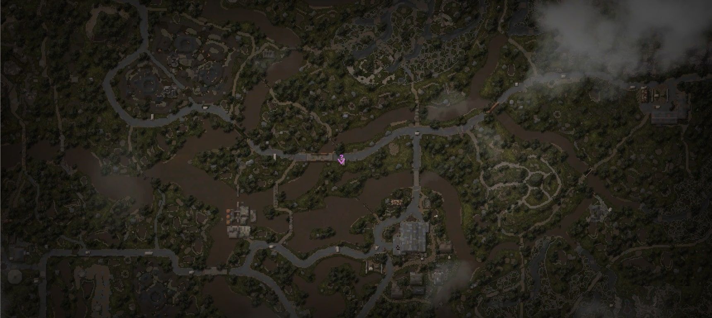
Расположение Новичка на карте
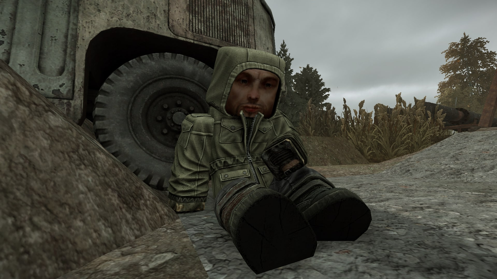
Квестовый персонаж Лёд
Выбираем следующие варианты ответов в первом диалоге:
1
Здоров, парень, помощь нужна, или сам справишься?
2
У меня есть военная аптечка, держи. [Отдать Военная аптечка (x1)]
1
Ты идти-то сможешь?
1
Доведу, поднимайся.
После этого вас переместит на Лодочную станцию. Говорим вновь с Новичком (его теперь зовут Лёд):
1
Да не за что. Ну, будь здоров, Лёд.
1
Что ты задумал?
1
Посылают, потому что ты ещё совсем зелёный. Вот обживёшься чутка, закорешишься с кем-то и станешь своим пацаном.
1
Некоторые бродяги на мутантов охотятся. Говорят, неплохие деньги получают.
2
Ну, тогда прибейся к пахану нормальному, и работай на него, опыта набирайся. Чутка пошестеришь - бригадиром сделают.
2
Ты на водку не налегай, в Зоне всегда голову нужно трезвой держать.
Далее ответы в диалоге будут линейными, просто завершите его.
Вторая встреча: Сельская школа
Следующее место встречи со Льдом пройдёт на базе бандитов на локации Обочина — в "Сельской школе". Лёд появится на первом этаже через 30 минут реального времени после выполнения предыдущего этапа.
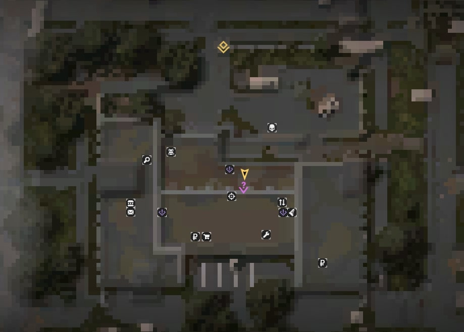
Точка появления Льда на базе
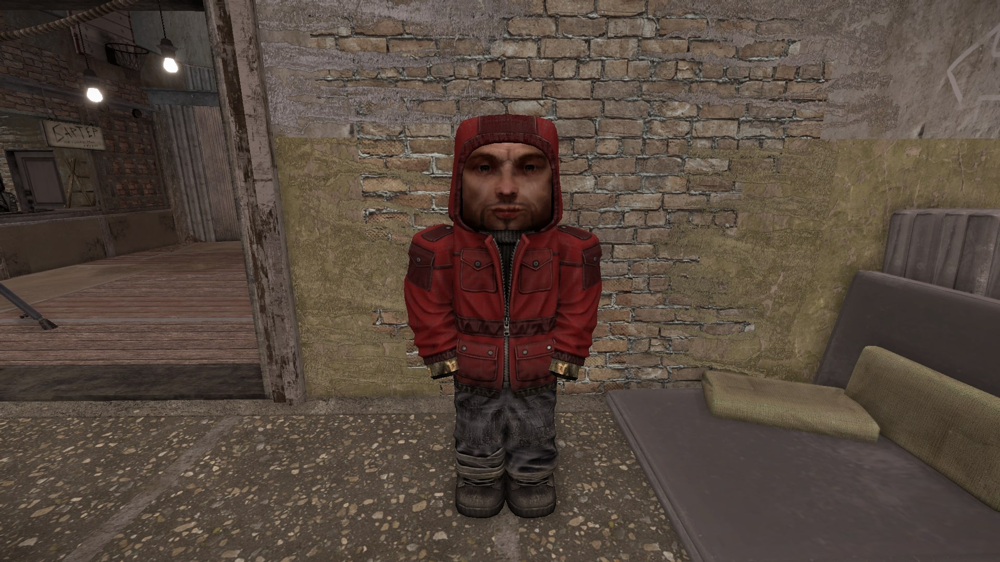
Лёд ждёт вас на первом этаже
Говорим со Льдом и выбираем следующие ответы:
1
Помню конечно, привет Лёд. Как жизнь?
1
Вижу, феню ты тоже начал учить.
1
Фигню несут твои пацаны. Человека уважают за дела правильные, а не за длинный язык.
1
И что нужно сделать?
1
Идет, завалю твоих шавок.
Теперь нам необходимо убить 5 шавок. Для этого квеста появятся области на карте с их обитанием. Убивая собак необходимо также собрать 5 хвостов с них, и уже с хвостами возвращаемся обратно ко Льду.
Хвосты можно купить на аукционе. Главное, убедитесь, что у вас есть 2 уровень "Сельской школы", чтобы вы могли воспользоваться почтой и забрать купленные на аукционе хвосты.
Отдаём хвосты и выбираем следующие ответы в диалоге со Льдом:
1
Да, вот хвосты.
1
Кого?
1
Красивый.
1
Хорошо, подумаю. А ты так и будешь под его крылом всё время просиживать?
1
Спрашивай
1
Конечно лучше всё мирно разрулить. Если не того пристрелишь - придётся нехилые суммы заносить, чтобы откупиться.
Третья встреча: Хата Диггеров
Следующая точка появления Льда — "Хата Диггеров" на локации Агрокомплекс "Колос". Появится он через час реального времени после сдачи хвостов на Обочине.
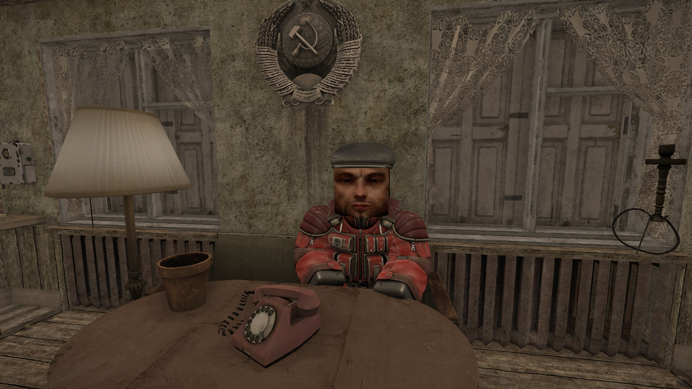
Он будет сидеть внутри
Лёд будет сидеть внутри хаты, говорим с ним — диалог линейный.
Четвёртая встреча: Бар
В Бар Лёд прибудет через 4 часа реального времени после диалога у Диггеров. Он будет сидеть снаружи помещения с квестовыми учёными на втором этаже.
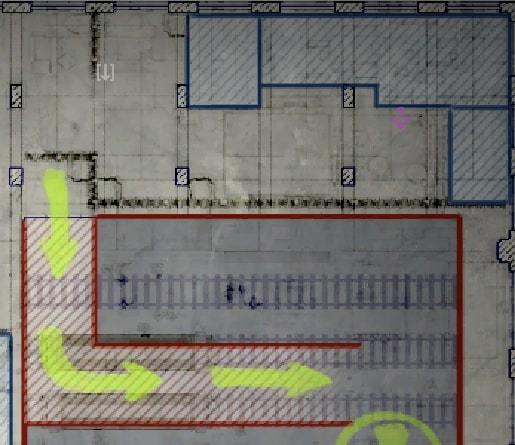
Лёд на втором этаже Бара
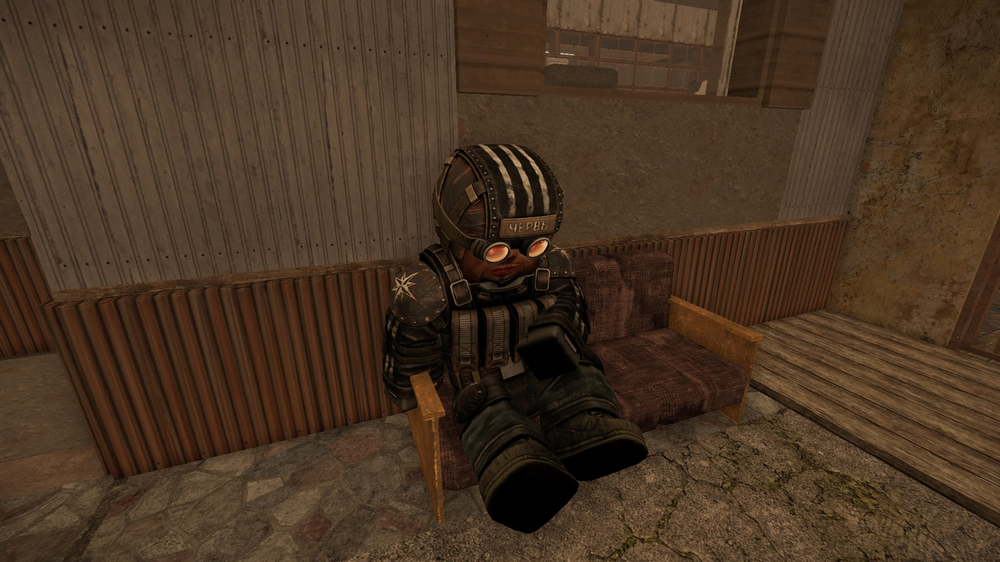
Разговор в Баре
Говорим со Льдом и помогаем ему с его проблемой:
1
Привет, Лёд. Без приключений добрался?
1
И как тебе Бар?
1
Тебя что, обокрали?
1
Вот уроды! Как теперь выкручиваться будешь?
1
Может, я тебе денег займу, по-дружески? Всё лучше, чем у каких-то мутных типов что-то просить.
1
Как я вообще распознаю именно твой автомат?
После этого диалога идём к бартерному торговцу — Горемыке и выбираем следующие варианты ответов:
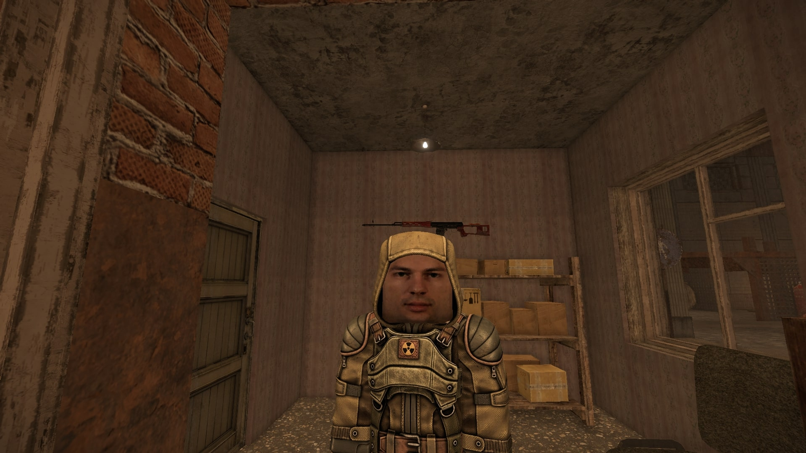
Торговец Горемыка в Баре
3
Мне тут сказали, что ты краденным торгуешь.
1
Не поспоришь. Меня интересует калаш, с ледяным узором. Вроде, недавно тебе такой продали.
3
Новичка одеваю, ему на первое время и такое сойдет.
1
Держи. [Заплатить 3 000 рублей]
Возвращаемся ко Льду и говорим с ним вновь:
1
Да, держи. Не выпускай из виду больше свою снарягу. [Отдать АКС Льда (x1)]
1
Спрашивай.
2
Всё нормально, эти чувства нас отличают от животных. Время лечит всё, когда нибудь кошмары пройдут, не унывай.
1
О чём же это?
2
Костюм - самое полезное. Оглядись, тут все в экзоскелетах ходят.
1
Деньги не так важны, как опыт. Лучше ещё в "лягушатнике" посиди, в Яме, например.
После этого диалога через несколько минут вам на почту придёт письмо от Льда с суммой в размере 25 000 рублей за калаш.
Пятая встреча: Переход на Яму
Следующее место появления Льда — возле перехода с Завода на Яму. Время ожидания — 30 минут реального времени.
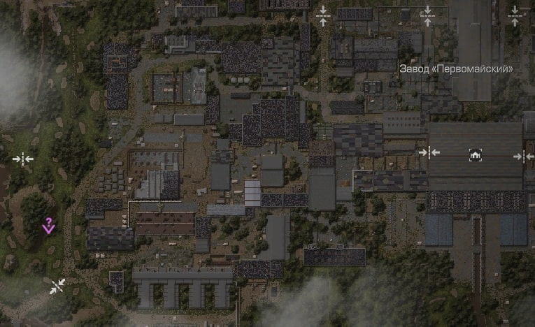
Лёд у пещеры
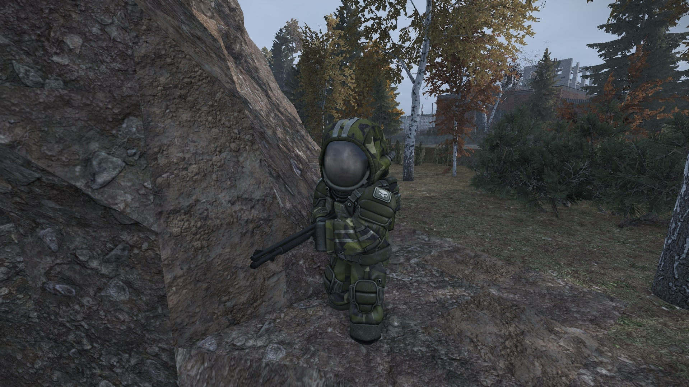
Лёд будет ждать у входа
Лёд будет стоять возле входа в пещеру, говорим с ним и заходим внутрь. Желательно взять с собой дробовик для отстрела шнырей. Как только убьёте всех шнырей, идите ко Льду по пещере. Выбирайте следующие ответы:
1
У меня было всего несколько тварей, и те какие-то вялые. Больные что ли? Думаю, ты больше завалил.
1
Идёт.
3
Мне всё время снится Голубой Шар. Он зовёт, манит меня вглубь Зоны. Чувствую, пока не найду его - всё это не закончится.
1
Я тоже надеюсь, благодарю за поддержку.
Шестая встреча: Мёртвый Город
В этот раз Лёд появится сразу. Прежде чем идти в Мёртвый Город, убедитесь что ваш костюм держит 1 уровень радиации. Если нет, закупитесь радиопротекторами второго уровня (6 штук хватит).
Настоятельно рекомендую обходить центр локации (статую и прилегающие дороги), так как там очень высокий уровень биозаражения.
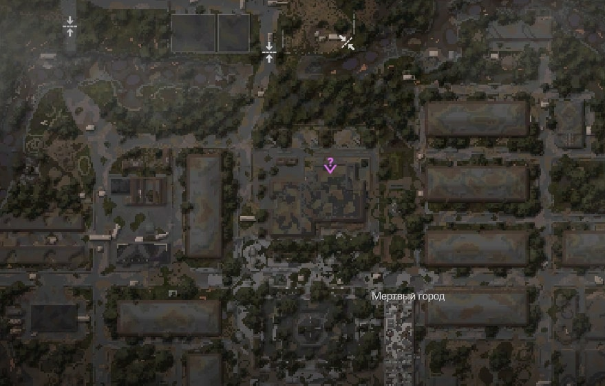
Лёд в Мёртвом Городе
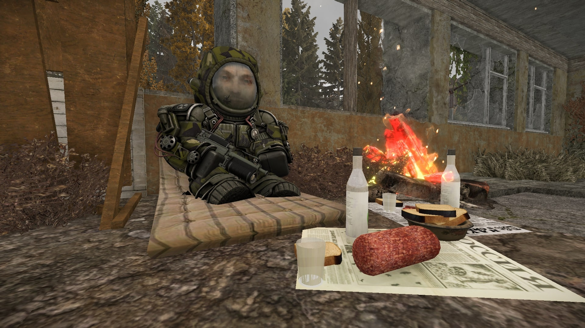
Лёд в здании
Идём в здание ко Льду и говорим с ним. Он попросит вас поискать журналы в трёх выделенных областях. Всего нужно найти 4 книги:
Первая книга (левая область) будет лежать в окне чердака.
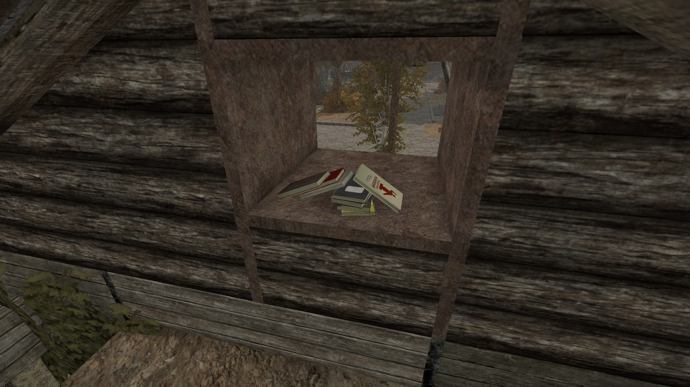Первая книга в окне
Вторая и третья книга лежат в кабинете (центральная область поиска).
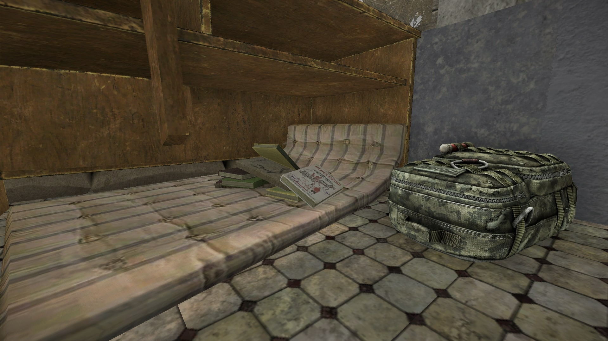Вторая книга под столом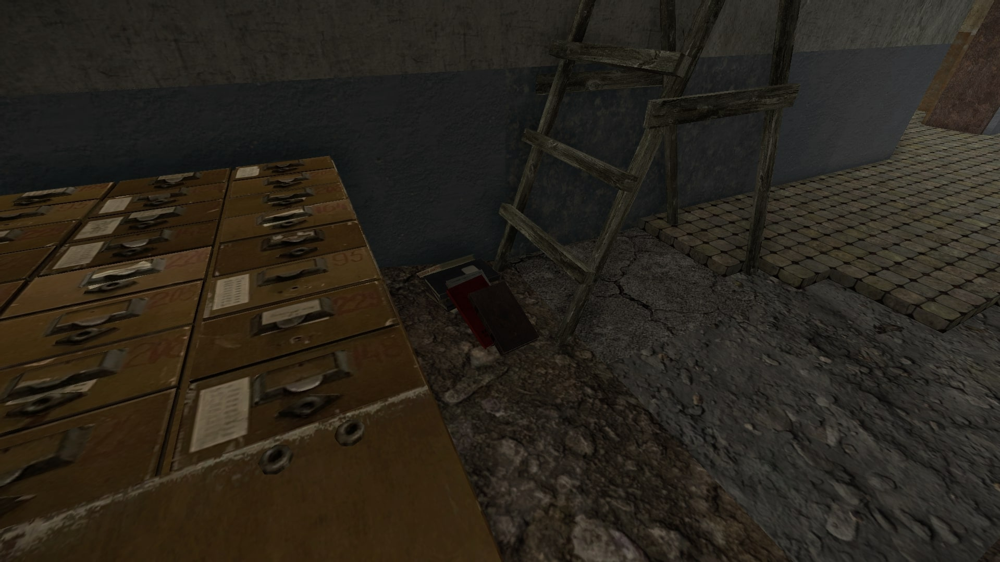Третья книга на полу
Последняя книга (правая область) лежит в гараже на полке.
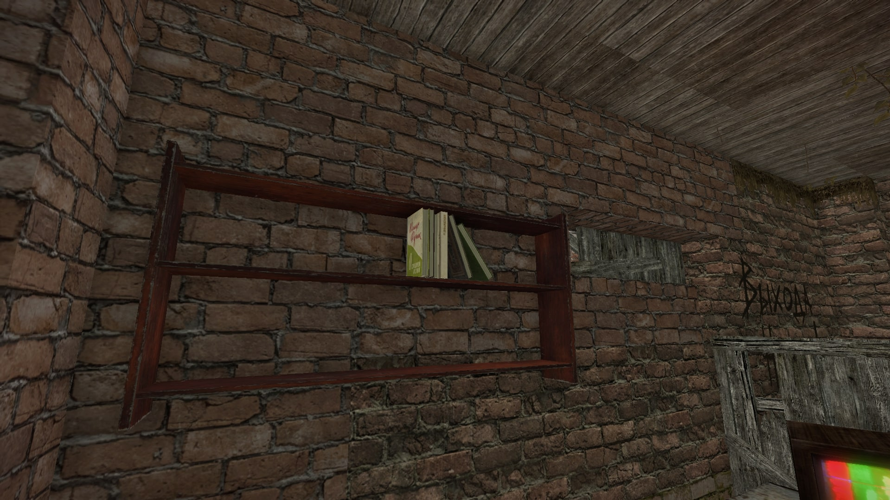Четвёртая книга в гараже
Как только подберёте все книги, возвращаемся ко Льду и отдаём их ему.
Через несколько минут вам на почту придёт награда от Льда в размере 30 000 рублей.
Финал: Пути Дураков
Последняя точка появления Льда — Пути Дураков. Тут также не придётся ждать, он появится сразу же.
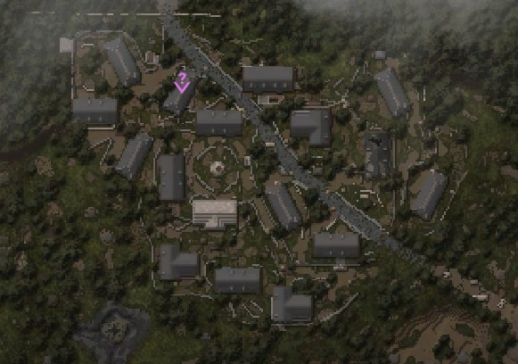
Финальная точка квеста
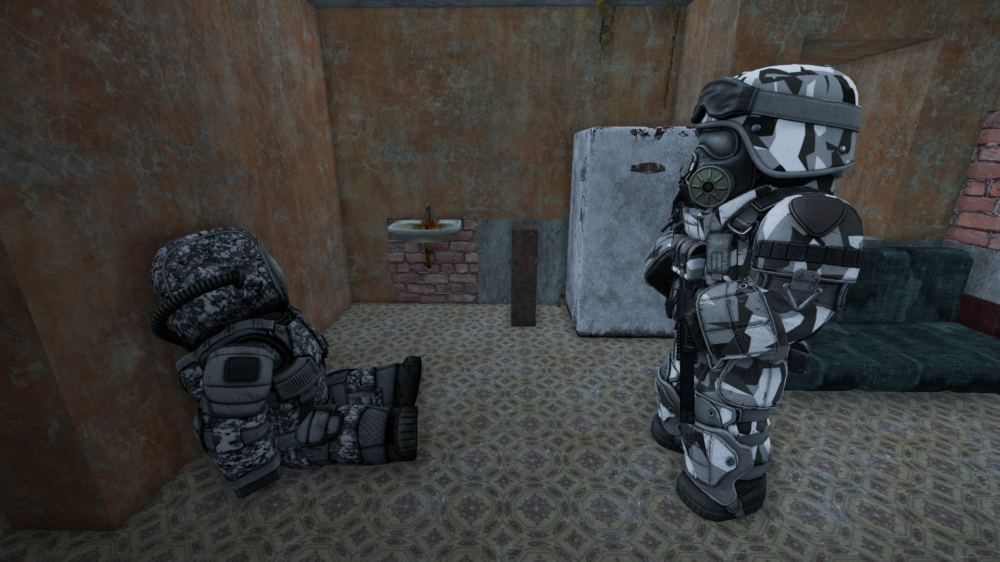
Лёд с пленником
Говорим со Льдом на втором этаже здания:
1
Лёд? Ну ты и приоделся... А это кто вообще?
1
И что с ним будешь делать? Выкуп просить?
1
Может, я попробую?
Говорим с бойцом "Шепота":
1
А ну, колись, падла, где хабар спрятал?
1
Слышь, урод, будешь молчать - я тебе яйца отрежу.
2
Ух, зараза, и чего ж ты боишься?
1
Ну, допустим. Чё ты хочешь?
1
Идёт. Мы, бандиты, не звери, просто так кровь не проливаем, и слово своё держим.
Говорим опять со Льдом:
1
Я узнал, где "шепчущий" спрятал хабар.
1
Не вздумай его убивать. Мы договорились.
1
На западе Пути Дураков есть брошенный лагерь "Шепота". Боец посоветовал его проверить. Я схожу, ты здесь подожди.
2
Справлюсь сам, не переживай.
Идём к указанной на карте точке и готовимся к битве с бойцами "Шепота".
Будьте предельно осторожны, так как несколько бойцов ходят с винтовкой Гаусса!
Убиваем бойцов и осматриваем ящик. В ящике будет лежать главная награда за квест — Сиг "Шепота". Возвращаемся в Бар и говорим со Льдом. Он выдаст последнюю награду за правильные ответы в диалогах — Жетон Льда.
 Подсумок с аптечками ученых ×3
Подсумок с аптечками ученых ×3